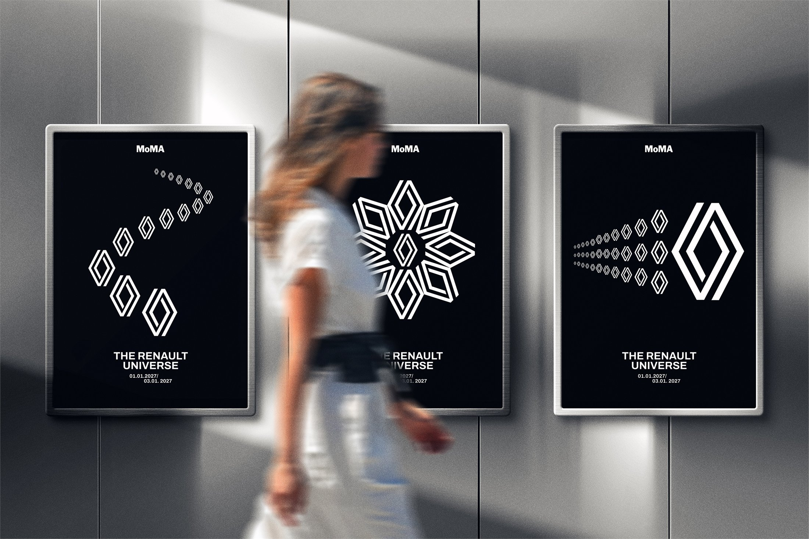
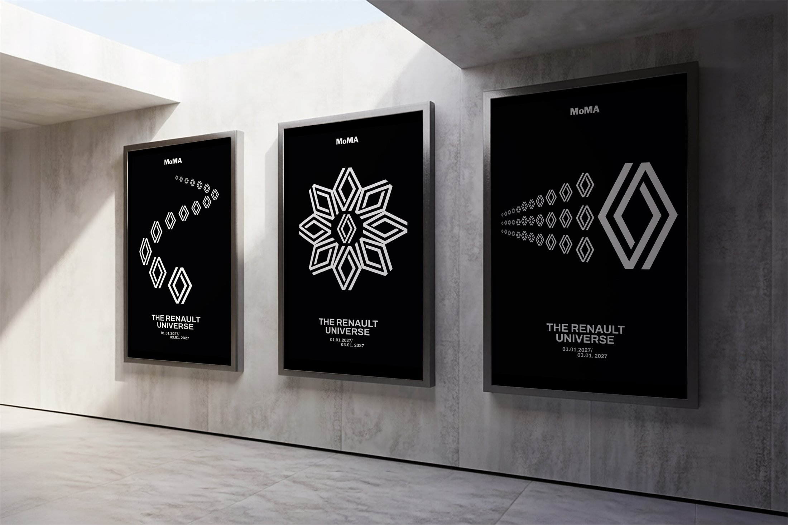
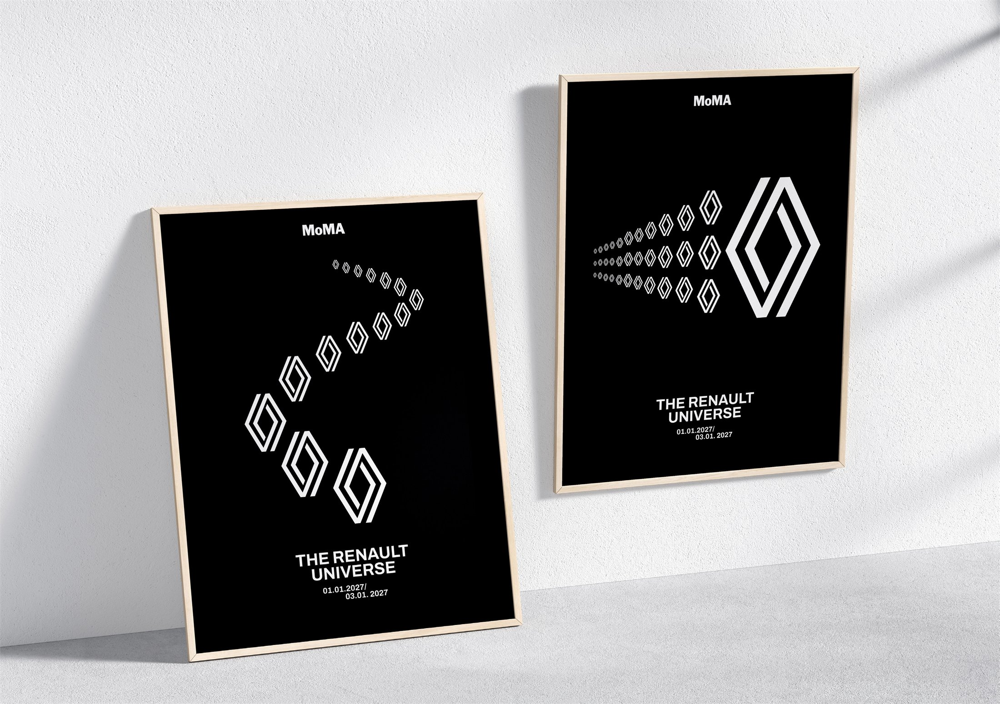
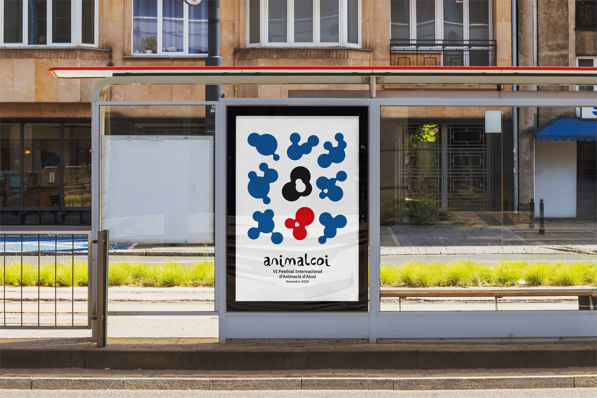
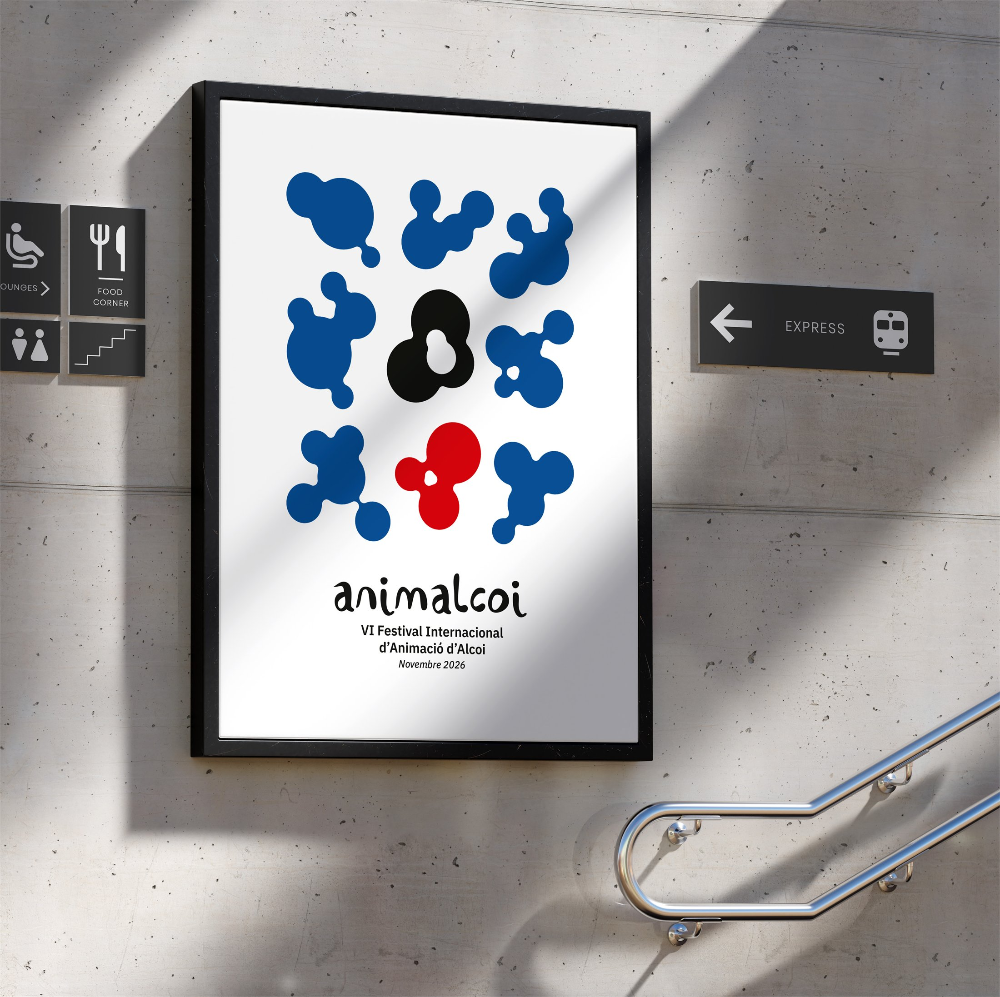
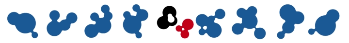
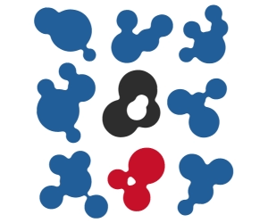
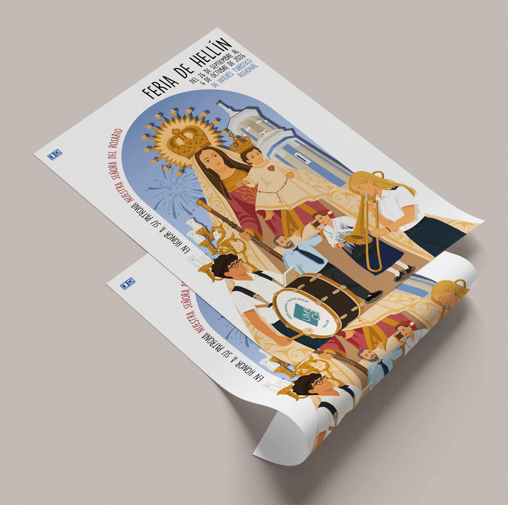
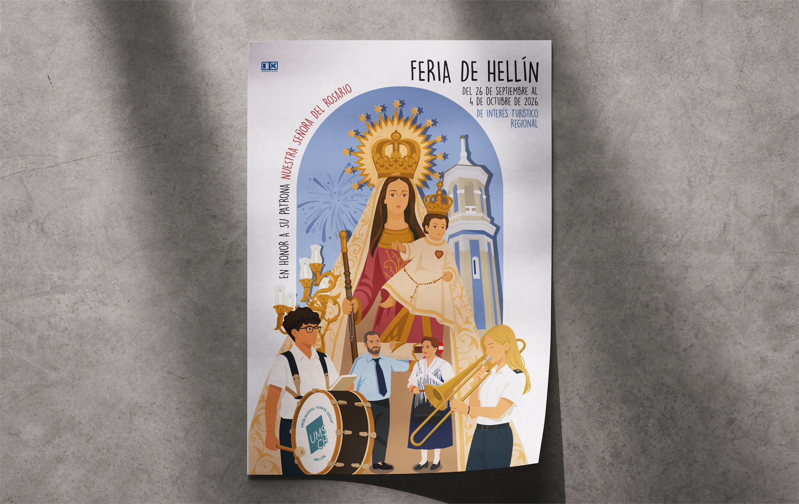

Cartelería

Cartelería para exposición sobre Renault
- Cartelería para exposición sobre Renault
- Cliente
- Proyecto académico
- Año
- 2026

Comunicación visual para Renault, que representa valores como la velocidad, la ecología, y la innovación tecnológica mediante la repetición de su imagotipo, utilizando exclusivamente su color corporativo.

Cartel para Animalcoi
- Cartel para el VI Festival Internacional de Animació d’Alcoi, 2026
- Cliente
- EASD Alcoi
- Año
- 2026
- Premio
- 2º Puesto: Accésit
Cartel que representa a Aitana, mascota del festival, mediante su descomposición en formas circulares y fluidas. Esto aporta flexibilidad de adaptación a distintos formatos y soportes. Para el ámbito digital se realizaron además dos gifs animados.




Cartel anunciador de la Feria de Hellín

- Cartel anunciador de la Feria de Hellín
- Cliente
- Concurso convocado por Ayuntamiento de Hellín
- Año
- 2026
Cartel anunciador realizado con un estilo ilustrado y cercano que refleja el espíritu festivo y popular de las fiestas. Un homenaje a quienes sostienen la tradición cada año.
